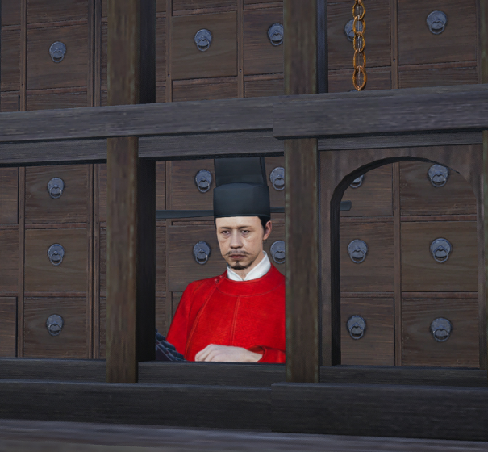
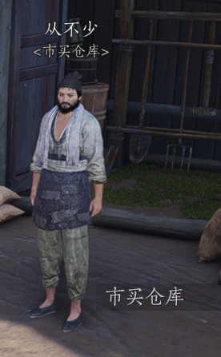

Jianghu
Market Trading Guide
Is market trading worth doing?
This guide is for you if any of the following apply:
- You belong to the Nine Mortal Ways and want to earn as many Commerce Coins as possible each week to improve or maintain your standing in the sect.
- You need Commerce Coins to buy food from street stalls or vote for your favorite performer in the Masked Troupe.
- You need to earn Commerce Coins to complete Guild Weekly Active Points tasks.
- You just want to stockpile as many Commerce Coins as you can.
- You are curious about how trading works.
To trade, you need to unlock Kaifeng. If it is still locked, advance the main story until you reach the region.
How does market trading work?
Each week, the Trade Commission in Kaifeng announces three goods sold in Kaifeng whose prices will fluctuate over the coming week. Buy at the original price and sell when prices rise to profit from the difference.
Trade Commission
The Trade Commission is located here:

The image below shows Zhang Qiyue, the Trade Commission NPC. Talk to him to check market prices or sell goods.

When you talk to Zhang Qiyue, choose from these options:
- Price Fluctuation Announcement: See which goods will fluctuate in price and check the prices in other players' worlds.
- I want to sell some goods: Sell at the price in your current world. In your own world, you receive your local price. When you join another player's world, you sell at that world's price.

Price Fluctuation Announcement
The next two images show how to read the Price Fluctuation Announcement.
Click an image to open the original in a new tab. Use your browser's zoom controls to get a closer look.


Market Bag
To see your unsold goods, press Esc and open Bag → Quest → Trading.

The Market Bag holds 10 goods by default. There are two ways to increase its capacity:
- Join a guild and select the bag capacity upgrade under Guild Technique → Wealth Through Trade. This can add up to 20 slots.
- Rent a property from Feng's Tradehall in Kaifeng, next to the Trade Commission, to increase your bag capacity. The capacity bonus does not stack across rentals. Rent the largest estate. I tried renting all three estates at once and did not unlock an achievement, so there is no need to try it yourself.
- Large estate: +60 slots (recommended)
- Medium estate: +30 slots
- Small house: +15 slots
When should you buy and sell?
The table shows reset times. You can take the corresponding action within the following 24 hours.
(Prices reset one hour after the daily login reset.)
Beijing time (UTC+8) | North American Eastern time (EST/EDT) | What to do |
|---|---|---|
Saturday, 6:00 AM | Friday, 6:00 PM EDT Friday, 5:00 PM EST | Goods and prices reset, and a new weekly price cycle begins. Buy goods. |
Monday, 5:00 AM | Sunday, 5:00 PM EDT Sunday, 4:00 PM EST | The weekly game reset restocks the goods. Buy again, especially goods whose prices fluctuate in your own world. |
Monday and Tuesday | Sunday and Monday | Prices tend to be low. Hold on to your goods. |
Wednesday, 6:00 AM | Tuesday, 6:00 PM EDT Tuesday, 5:00 PM EST | Higher prices start to appear. You can start selling. |
Thursday, 6:00 AM | Wednesday, 6:00 PM EDT Wednesday, 5:00 PM EST | Prices are still high. Sell as soon as you can. |
Friday, 6:00 AM | Thursday, 6:00 PM EDT Thursday, 5:00 PM EST | This is the last day to sell. Clear out your stock. |
Saturday, 6:00 AM | Friday, 6:00 PM EDT Friday, 5:00 PM EST | The deadline for selling last week's goods has passed. The next weekly cycle begins. |
Guild trading benefits
What are the benefits?
If you join a guild and earn enough Wonder Jade from Guild Weekly Active Points tasks, you can increase your bag capacity. When you sell in guild members’ worlds, you also get tax reductions and higher sale prices. These bonuses apply only when you sell in another guild member’s world. Sales in your own world are excluded.

The Guild Technique upgrades that affect market trading:


How do you find guild members to sell to?
At the guild base, find the NPC Cong Bushao shown below:

Talk to Cong Bushao to check prices in guild members' worlds. You must have the relevant goods in your bag. You can also select a member directly to send a message or request to join their world.

When is it more profitable to sell to guild members?
The calculations below assume you have fully upgraded the relevant Guild Technique bonuses:
- Sale price bonus: +14.5%
- Tax reduction: −10%
Selling in a non-guild player's world or in your own incurs an 11% tax.
Take ginkgo prices as an example:
Ginkgo price multiplier (Original price: 36) | Price after adjustment | Non-guild players (or you) | Guild members (maxed bonuses) | Notes |
|---|---|---|---|---|
0% | 36 | 36 - 36 x 11% = 32.04 = 32 | (36 x (1 + 14.5%)) x (1 - 1%) = 40.8 = 41 | Even at the lowest listed rate of 0%, you still break even or make a profit when selling in a guild member's world. |
113% | 41 (40.68) | 41 - 41 x 11% = 36.49 = 36 | (41 x (1 + 14.5%)) x (1 - 1%) = 46.48 = 46 | At 113% or higher, you break even or make a profit even in a non-guild player's world. |
236% | 85 (84.96) | 85 - 85 x 11% = 75.65 = 76 | (85 x (1 + 14.5%)) x (1 - 1%) = 96.35 = 96 | Above 236%, selling in a guild member's world pays more than selling at 300% in a non-guild player's world. See the next row for the comparison. |
300% | 108 | 108 - 108 x 11% = 96.12 = 96 | (108 x (1 + 14.5%)) x (1 - 1%) = 122.42 = 122 | 300% for non-guild players = 236% for guild members |
Calculating the break-even price in a non-guild player's world:
Suppose you buy the goods at price Y. Find the price multiplier X% at which the amount you receive after the 11% tax is at least Y. In the formula below, * means multiplication:
Y * X% - (Y * X% * 11%) >= Y
Simplify both sides to get X% >= 1 / (1 - 11%).
So X% = 112.36%. Round up to 113%.
What guild price multiplier beats 300% in a non-guild player's world?
Suppose you buy the goods at price Y. Find the guild price multiplier X% above which selling in a guild member's world beats selling at 300% in a non-guild player's world. The formula is below, where * means multiplication:
Y *300% - (Y * 300% * 11%) <= (Y * X% * (1 + 14.5%)) * (1 - 1%)